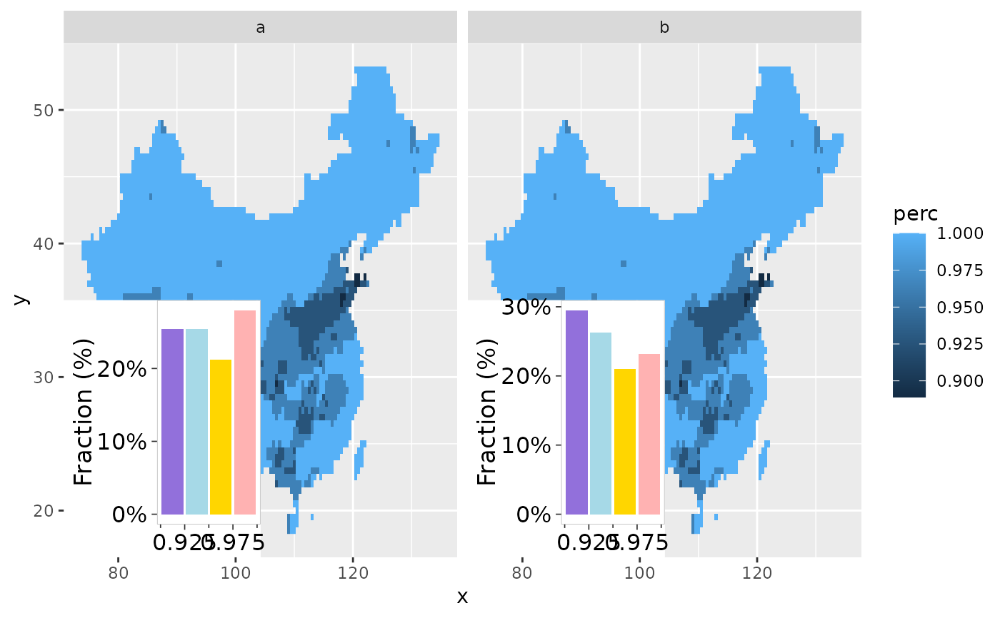
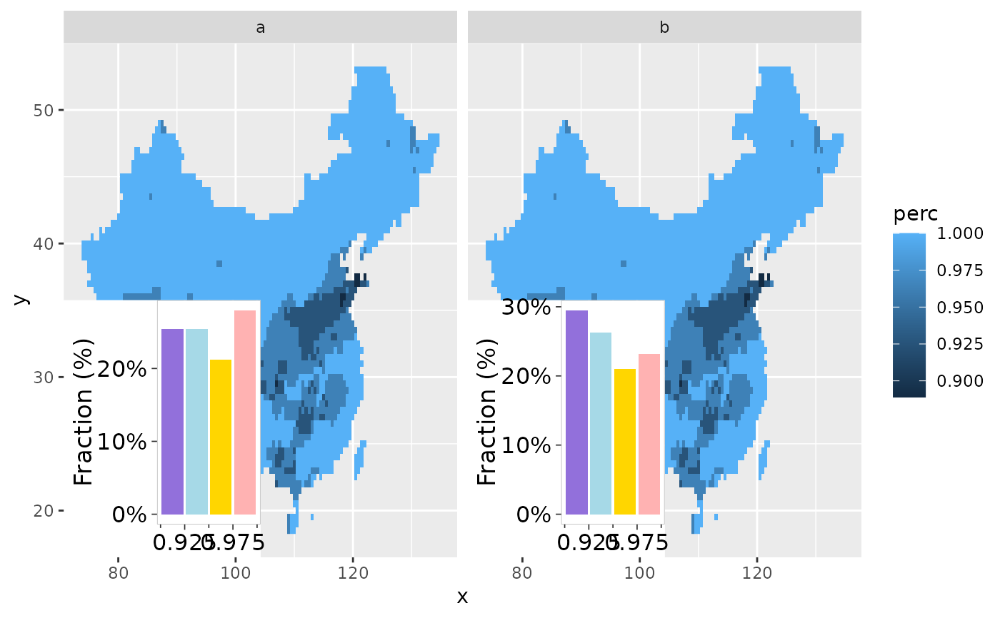

geom_annotation
geom_annotation_func.Rdgeom_annotation
Arguments
- mapping
Set of aesthetic mappings created by
aes(). If specified andinherit.aes = TRUE(the default), it is combined with the default mapping at the top level of the plot. You must supplymappingif there is no plot mapping.- data
A tibble with the column of
grob- plot.fun
function to plot,
p <- plot.fun(data, ...)- ...
other parameters to
plot.fun- x
A numeric vector or unit object specifying x-location.
- y
A numeric vector or unit object specifying y-location.
- width
A numeric vector or unit object specifying width.
- height
A numeric vector or unit object specifying height.
- just
A string or numeric vector specifying the justification of the viewport relative to its (x, y) location. If there are two values, the first value specifies horizontal justification and the second value specifies vertical justification. Possible string values are:
"left","right","centre","center","bottom", and"top". For numeric values, 0 means left alignment and 1 means right alignment.
Examples
## prepare data
library(gg.layers)
library(ggplot2)
library(rcolors)
data("d_trendPerc")
d_mask <- mutate(d_trendPerc, mask = perc <= 0.99) %>% as_tibble()
n <- nrow(d_mask) * 2
dat <- rbind(cbind(type = "a", d_mask), cbind(type = "b", d_mask)) %>%
mutate(val = rnorm(n))
brks <- seq(0.9, 1, 0.025)
nbrk <- length(brks) - 1
cols <- get_color(rcolors$amwg256, nbrk)
## option1
# the part of not significant
ggplot(data = dat, aes(x, y)) +
geom_raster(aes(fill = perc)) +
layer_barchart(aes(z = val),
width = unit(0.3, "npc"),
height = unit(0.3, "npc"),
brks = brks, cols = cols
) +
facet_wrap(~type)
#> Warning: `guide_axis_minor()` was deprecated in ggh4x 0.3.0.
#> ℹ Please use `ggplot2::guide_axis(minor.ticks = TRUE)` instead.
#> ℹ The deprecated feature was likely used in the ggplot2 package.
#> Please report the issue at <https://github.com/tidyverse/ggplot2/issues>.
 ## option2
func <- function(data, ...) {
add_barchart(data$z, brks, cols, ...)
}
ggplot(data = dat, aes(x, y)) +
geom_raster(aes(fill = perc)) +
geom_annotation_func(aes(z = val), plot.fun = func) +
facet_wrap(~type)

## option2
func <- function(data, ...) {
add_barchart(data$z, brks, cols, ...)
}
ggplot(data = dat, aes(x, y)) +
geom_raster(aes(fill = perc)) +
geom_annotation_func(aes(z = val), plot.fun = func) +
facet_wrap(~type)
